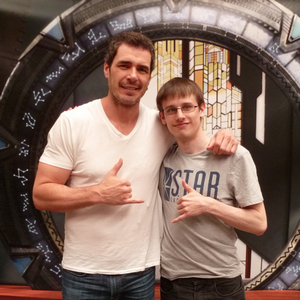

Mon nom est Philippe Joulot, je suis originaire de Vélizy-Villacoublay en France et vit actuellement non loin de là à Viroflay. Ma passion pour l'informatique et plus précisément pour le domaine du web m'a menée au métier de développeur logiciel.
J'aime énormément programmer et réaliser les idées qui me traversent l'esprit. Je mêle mes autres passions à celle de l'informatique. Je développe essentiellement des applications et sites web, mais code plus rarement dans d'autres contextes. Je porte un intérêt particulier à l'Open Source et suis de de près les avancements du projet Boot To Gecko plus communément appelé Firefox OS.
J'apprécie beaucoup les animaux, et en particulier l'orque qui est mon préféré. Cela explique mon logo qui représente ce magnifique mammifère marin. Grand amateur de séries télévisées, je maintiens des sites internet sur celles que je préfère; je participe également à de nombreuses conventions de sciences-fiction et de séries télévisées fantastiques.